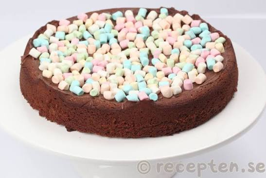
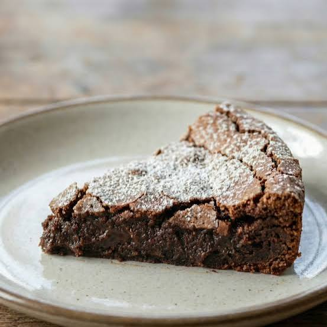
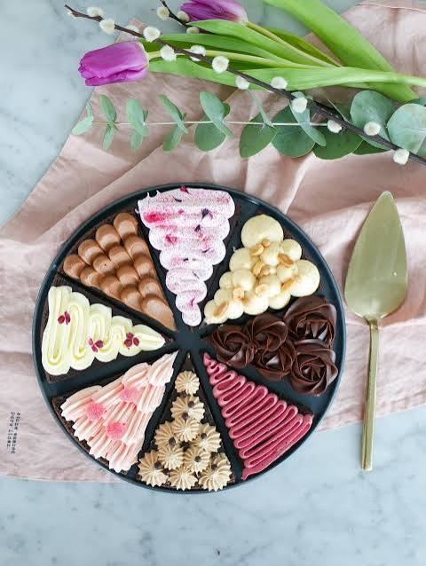
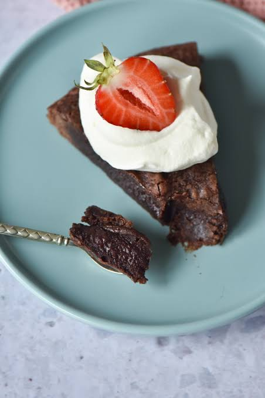

Kladdkaka
En enkel och seg kladdkaka med chokladig smak.
- 8 port
- 35 min
- Lätt
Ingredienser
För 4 portioner
Så här gör du
Serveringsförslag




En enkel och seg kladdkaka med chokladig smak.
För 4 portioner


